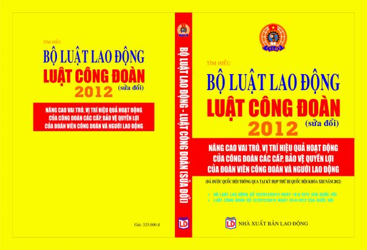

Giới thiệu Luật Công đoàn sửa đổi 2012

Lần cập nhật cuối lúc Thứ ba, 17 Tháng 9 2013 07:54 Viết bởi Administrator Thứ tư, 05 Tháng 12 2012 21:59
 Luật Công đoàn (sửa đổi) được Quốc hội khoá XIII thông qua tại kỳ họp thứ 3, ngày 20 tháng 6 năm 2012 với 90,18% đại biểu tán thành. Ngày 02/7/2012, Chủ tịch nước đă ban hành Lệnh số 10/2012/L-CTN công bố Luật Công đoàn. Luật Công đoàn (sửa đổi) có hiệu lực thi hành từ ngày 01 tháng 01 năm 2013.
Luật Công đoàn (sửa đổi) 2012 nhằm khắc phục những hạn chế, bất cập của Luật Công đoàn 1990, đáp ứng hoạt động của tổ chức Công đoàn trong thời kỳ đẩy mạnh công nghiệp hoá, hiện đại hoá đất nước, hội nhập kinh tế quốc tế. Đồng thời Luật Công đoàn (sửa đổi) nhằm kịp thời thể chế hoá các quan điểm, đường lối của Đảng về hoàn thiện, phát triển nền kinh tế thị trường định hướng xă hội chủ nghĩa và thực hiện Nghị quyết số 20-NQ/TW ngày 28/1/2008 của Ban Chấp hành Trung ương Đảng, khoá X về: "Tiếp tục xây dựng giai cấp công nhân Việt Nam thời kỳ đẩy mạnh công nghiệp hoá, hiện đại hoá đất nước". Trên cơ sở đó, bảo đảm và phát huy vai tṛ đặc biệt quan trọng của Công đoàn trong thời kỳ mới, góp phần giữ vững ổn định chính trị xă hội của đất nước.
Luật Công đoàn sửa đổi được kết cấu gồm 6 chương, 33 điều Luật.
Trong đó, giữ bốn chương của Luật Công đoàn hiện hành, bổ sung thêm 2 chương mới: chương III "Trách nhiệm của Nhà nước, cơ quan, tổ chức, doanh nghiệp đối với Công đoàn" và chương V "Giải quyết tranh chấp, xử lư vi phạm pháp luật về công đoàn"; tăng 14 điều Luật
Chương I. Những quy định chung
Xuất phát và kế thừa địa vị pháp lư của Công đoàn theo thể chế chính trị của xă hội Việt Nam đă được xác định, quy định tại điều 10 của Hiến pháp và tại điều 1, điều 2 của Luật công đoàn 1990, Luật Công đoàn lần này tiếp tục khẳng định Công đoàn là tổ chức chính trị - xă hội rộng lớn của giai cấp công nhân và người lao động, là thành viên trong hệ thống chính trị, dưới sự lănh đạo của Đảng; có chức năng đại diện cho cán bộ, công chức, viên chức, công nhân lao động, cùng với cơ quan nhà nước, tổ chức kinh tế, xă hội chăm lo và bảo vệ quyền, lợi ích của người lao động; tham gia quản lư nhà nước, quản lư kinh tế - xă hội, tham gia thanh tra, kiểm tra, giám sát hoạt động của cơ quan nhà nước, tổ chức, doanh nghiệp; tuyên truyền, vận động người lao động học tập nâng cao tŕnh đọ, kỹ năng nghề nghiệp, chấp hành pháp luật, xây dựng và bảo vệ Tổ quốc.
Đây là quy định đặc biệt quan trọng trong Luật Công đoàn để tạo cơ sở thống nhất, nền tảng quy định cụ thể các quyền và trách nhiệm theo lĩnh vực hoạt động của Công đoàn tại chương tiếp theo, tạo hành lang pháp lư cho Công đoàn thực hiện tốt các chức năng Luật định.
Chương I c̣n bổ sung điều mới về: "Giải thích từ ngữ" và "Hệ thống tổ chức Công đoàn". đặc biệt đă luật hoá chức danh Cán bộ công đoàn không chuyên trách từ Tổ phó tổ công đoàn trở lên, tạo nền tảng mở rộng quyền được bảo đảm điều kiện hoạt động công đoàn quy định tại chương IV.
Một điểm mới trong Chương này là đă xác định những hành vi bị nghiêm cấm liên quan đến việc cản trở thành lập và hoạt động công đoàn; phân biệt đối xử với người lao động, cán bộ công đoàn, can thiệp vào tổ chức và hoạt động công đoàn; đồng thời quy định bổ sung thêm hành vi bị nghiêm cấm liên quan lợi dụng quyền công đoàn để vi phạm pháp luật, xâm phạm lợi ích của Nhà nước, doanh nghiệp, cá nhân nhằm bảo đảm thêm sự b́nh đẳng trong chấp hành pháp luật công đoàn của các đối tượng áp dụng Luật.
Chương II. Quyền, trách nhiệm của Công đoàn và đoàn viên công đoàn
Chương này là một trong những chương quan trọng nhất của Luật, quy định cụ thể các quyền và trách nhiệm theo từng lĩnh vực hoạt động của Công đoàn trên cơ sở chức năng của Công đoàn đă được Hiến định và xác định, quy định tại điều 1 của Luật; đồng thời luật hoá từ Điều lệ công đoàn các quyền và trách nhiệm của đoàn viên công đoàn theo yêu cầu của Quốc hội
Chương II. Quyền, trách nhiệm của Công đoàn và đoàn viên công đoàn cũng đă quy định cụ thể thêm quyền, trách nhiệm phát triển đoàn viên, thành lập công đoàn cơ sở; quy định tăng thêm trách nhiệm của Công đoàn cấp trên cơ sở trong việc tiếp cận doanh nghiệp để tuyên truyền, vận động, hướng dẫn thành lập công đoàn cơ sở, hỗ trợ giải quyết những khó khăn, hạn chế hiện nay của Công đoàn cơ sở. Đặc biệt quan trọng là quy định trách nhiệm của Công đoàn cấp trên cơ sở trong việc đại diện, bảo vệ quyền lợi cho người lao động ở các đơn vị, doanh nghiệp chưa thành lập công đoàn. Thông qua đó tạo hành lang pháp lư vững chắc cho Công đoàn cấp trên cơ sở chủ động chuẩn bị các điều kiện cần thiết để từng bước thực hiện tốt trách nhiệm theo quy định của pháp luật.
Chương III. Trách nhiệm của Nhà nước, cơ quan, tổ chức, doanh nghiệp đối với Công đoàn
Luật Công đoàn 1990 đă có một số quy định trách nhiệm của Cơ quan nhà nước, tổ chức, đơn vị đối với Công đoàn liên quan đến việc tôn trọng quyền độc lập về tổ chức và các quyền khác của Công đoàn, tạo điều kiện cần thiết cho Công đoàn thực hiện các chức năng, nhiệm vụ của mỗi bên. Tuy nhiên, một số lĩnh vực thuộc trách nhiệm của cơ quan Nhà nước và một số lĩnh vực thuộc trách nhiệm của đơn vị, doanh nghiệp liên quan đến hợp tác, phối hợp với Công đoàn chưa được qui định rơ ràng làm ảnh hưởng đến hiệu lực thi hành của Luật và hiệu quả hoạt động của Công đoàn.
Để giải quyết tồn tại, hạn chế trên, chương III quy định rơ thêm trách nhiệm của Nhà nước, cơ quan nhà nước, tổ chức, doanh nghiệp đối với hoạt động Công đoàn. Trong đó, xác định rơ trách nhiệm của Nhà nước trong lĩnh vực tuyên truyền, phổ biến pháp luật, thanh tra, kiểm tra và xử lư vi phạm pháp luật công đoàn; trách nhiệm của cơ quan, tổ chức, doanh nghiệp trong hợp tác, tạo điều kiện, bảo đảm điều kiện hoạt động của công đoàn cơ sở, của cán bộ công đoàn và đặc biệt là phải có nghĩa vụ đóng kinh phí công đoàn theo quy định của Luật này.
Chương IV. Những bảo đảm hoạt động của Công đoàn
Chương IV xác định có tính nguyên tắc việc bảo đảm về tổ chức và số lượng cán bộ công chức để thực hiện chức năng, quyền và trách nhiệm của Công đoàn.
Bổ sung và mở rộng quy định về thời gian tối thiểu cho hoạt động công đoàn đối với cán bộ Công đoàn không chuyên trách tại cơ sở. Ngoài cán bộ Công đoàn có chức danh Chủ tịch, Phó chủ tịch công đoàn cơ sở, Uỷ viên BCH, cán bộ công đoàn có chức danh Tổ trưởng, Tổ phó công đoàn được sử dụng thời gian trong giờ làm việc 12 giờ trong một tháng do doanh nghiệp trả lương, để hoạt động công đoàn. Tổ trưởng, Tổ phó công đoàn là những người liên quan chủ yếu và trực tiếp đến tổ chức thực hiện các nhiệm vụ của Công đoàn tại cơ sở. Qui định mới này hết sức cần thiết, đồng thời nâng cao thêm trách nhiệm của đơn vị, doanh nghiệp đối với tổ chức Công đoàn.
Bổ sung quy định về quyền lợi của cán bộ công đoàn không chuyên trách do cơ quan, tổ chức, doanh nghiệp trả lương, được hưởng phụ cấp hoạt động công đoàn và khoản phụ cấp này được thực hiện theo quy định cụ thể của Tổng Liên đoàn Lao động Việt Nam.
Bổ sung quy định bảo vệ cán bộ công đoàn về việc làm. Theo đó, cán bộ công đoàn không chuyên trách được gia hạn hợp đồng lao động, hợp đồng làm việc theo nhiệm kỳ tham gia Ban chấp hành công đoàn cơ sở; đơn vị sử dụng lao động không được tự ư chấm dứt hợp đồng hoặc thuyên chuyển công tác cán bộ công đoàn không chuyên trách nếu không có sự thoả thuận của công đoàn.
Bảo đảm về tài chính công đoàn là một nội dung quan trọng trong Chương IV. Vấn đề tài chính công đoàn được Luật Công đoàn 1990 quy định mang tính nguyên tắc, không quy định cụ thể mà giao cho Chính phủ, Bộ, ngành quy định dưới h́nh thức Nghị định và Thông tư nên giá trị pháp lư và hiệu lực không cao, làm ảnh hưởng lớn đến hiệu quả hoạt động của công đoàn trong quá tŕnh tổ chức thực hiện các quyền, trách nhiệm theo Luật định; đặc biệt là những bất cập liên quan đến đối tượng đóng kinh phí công đoàn thiếu b́nh đẳng, mức đóng, nền đóng chưa thống nhất. Nhằm giải quyết bất cập trên, Luật Công đoàn (sửa đổi) 2012 đă quy định tất cả các cơ quan, tổ chức, doanh nghiệp thuộc mọi thành phần kinh tế không phân biệt nơi đă thành lập hay chưa thành lập công đoàn, đều phải có nghĩa vụ đóng kinh phí công đoàn bằng 2% tính trên quỹ tiền lương làm căn cứ đóng BHXH cho người lao động.
Nhằm bảo đảm nguyên tắc quản lư tài chính công đoàn, tính minh bạch và tăng cường công tác quản lư tài chính của Công đoàn vừa theo pháp luật, vừa bảo đảm tính độc lập của Công đoàn, Luật xác định rơ các nội dung chi và quy định Công đoàn thực hiện quản lư, sử dụng và kiểm tra tài chính công đoàn theo quy định của pháp luật và quy định của Tổng Liên đoàn lao động VN; cơ quan nhà nước có thẩm quyền giám sát, kiểm tra, kiểm toán việc quản lư, sử dụng tài chính công đoàn.
Chương V. Giải quyết tranh chấp, xử lư vi phạm pháp luật công đoàn
Chương này quy định hai nội dung mới liên quan đến việc xác định nguyên tắc giải quyết tranh chấp về quyền công đoàn, xử lư vi phạm pháp luật về công đoàn và trách nhiệm của Chính phủ thực hiện chức năng quản lư nhà nước thông qua việc ban hành văn bản pháp luật quy định chi tiết việc xử phạt vi phạm hành chính đối với hành vi vi phạm pháp luật về công đoàn.
Chương VI. Điều khoản thi hành
Xác định hiệu lực thi hành của Luật từ ngày 01 tháng 01 năm 2013;
Giao Chính phủ có trách nhiệm thống nhất với Tổng Liên đoàn lao động VN quy định chi tiết, hướng dẫn thi hành một số điều, khoản được giao trong Luật. Theo đó, Tổng Liên đoàn dự kiến sẽ đề nghị với Chính phủ thống nhất xây dựng và ban hành các Nghị định quy định chi tiết và hướng dẫn thi hành:
1) Về quyền và trách nhiệm của công đoàn (Điều 10, Điều 11)
2) Về tài chính công đoàn (Điều 26)
3) Về xử phạt hành chính hành vi vi phạm pháp luật về công đoàn (Điều 31).
- 04/03/2013 07:44 - TỔ NGỮ VĂN TỔ CHỨC HỘI THI THUYẾT TRÌNH VĂN HỌC NĂ…
- 21/02/2013 10:06 - TRƯỜNG THPT CHUYÊN NGUYỄN BỈNH KHIÊM TỔ CHỨC HỘI T…
- 29/01/2013 07:53 - Giấy mời Hội trại Mừng Đảng, Đón Xuân
- 12/12/2012 23:14 - TRƯỜNG THPT CHUYÊN NGUYỄN BỈNH KHIÊM TỔ CHỨC SINH …
- 07/12/2012 16:31 - HOẠT ĐỘNG CỦA CÂU LẠC BỘ TIẾNG ANH-
- 05/12/2012 06:25 - Trung tâm Phát triển nguồn nhân lực CLC làm việc v…
- 05/12/2012 06:17 - Tin an toàn giao thông
- 12/11/2012 08:30 - Kết quả xếp giải thi HSG lớp 12
- 10/11/2012 08:29 - Kết quả thi HSG 12 năm học 2012-2013
- 08/10/2012 10:36 - Hội nghị nhà giáo - lao động năm học 2012 - 2013 v…